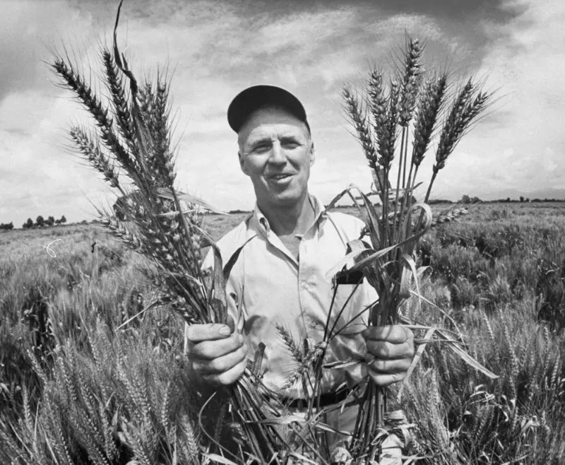

Photo representant le Dr. Norman Borlaug avec ses semances de blé transformées
L'Homme en quelques dates
1914:
Norman Borlaug est né à Cresco, petite ville de l'Iowa dans la ceinture de maïs, une grande zone
agricole américaine.
1944:
Il obtient son doctorat de pathologie végétale de l'université du Minnesota. Il s'associe à un
projet de recherche au Office of Special Studies qui deviendra plus tard le Centre
international d'amélioration du maïs et du blé, situé dans la périphérie de Mexico.
1959:
Il est mandaté par la Fondation Rockefeller pour sélectionner des variétés de blé pour les milieux
tropicaux, il proposa les variétés à haut rendement Lerma Rojo 64 et Sonora 64, basées sur la
variété de
blé Norin 10 et des variétés traditionnelles mexicaines permettant de tripler les rendements de
cette céréale.
1965-1970:
Il sauve un milliard de Pakistanais et d'Indiens de la famine grâce à ces semences
Selon ses propres calculs, elles ont permis de pratiquement doubler la production de blé de
l'Inde et du Pakistan entre 1965 et 1970, soit une hausse de plus de 11 millions de tonnes.
1970:
Grâce à ses résultats et son travail, il obtient le prix Nobel en 1970
1984:
Travaille pour à l'université A&M du Texas
1986:
Il a commencé à travailler avec l'association Sasakawa Africa qui vise à éliminer la malnutrition et
la pauvreté en Afrique et a créé le World Food Prize, décerné chaque année à ceux qui contribuent de
façon significative à la qualité, à la quantité et à la disponibilité des vivres dans le monde.
2009:
Il réunit 300 experts internationaux en agronomie pour échanger sur les dernières informations
tirées de leurs collaborations et de se pencher sur les signes de la présence
d'une souche virulente de rouille du blé identifiée en 1999 en Ouganda et qui risquait de se
propager.
2009:
Il décède des suites d'un cancer. Il était père de deux enfants. Son épouse, Margaret, était décédée
en 2007